Same stance and bar position all 12 weeks (high or low bar, pick one).
Big breath and brace before each rep; knees track over toes.
Hit at least parallel: hip crease below top of knee.
Long femurs (you're 6'3"): a slightly wider stance and more forward lean is normal.
Step-by-step
This exercise is best performed inside a squat rack for safety purposes. To begin, first set the bar on a rack to just below shoulder level. Once the correct height is chosen and the bar is loaded, step under the bar and place the back of your shoulders (slightly below the neck) across it.
Hold on to the bar using both arms at each side and lift it off the rack by first pushing with your legs and at the same time straightening your torso.
Step away from the rack and position your legs using a shoulder width medium stance with the toes slightly pointed out. Keep your head up at all times and also maintain a straight back. This will be your starting position. (Note: For the purposes of this discussion we will use the medium stance described above which targets overall development; however you can choose any of the three stances discussed in the foot stances section).
Begin to slowly lower the bar by bending the knees and hips as you maintain a straight posture with the head up. Continue down until the angle between the upper leg and the calves becomes slightly less than 90-degrees. Inhale as you perform this portion of the movement. Tip: If you performed the exercise correctly, the front of the knees should make an imaginary straight line with the toes that is perpendicular to the front. If your knees are past that imaginary line (if they are past your toes) then you are placing undue stress on the knee and the exercise has been performed incorrectly.
Begin to raise the bar as you exhale by pushing the floor with the heel of your foot as you straighten the legs again and go back to the starting position.
Descend under control, hold 2 full seconds at the bottom without relaxing.
Stay tight in the hole; drive up hard after the pause.
Builds position and strength out of the bottom.
Step-by-step
This exercise is best performed inside a squat rack for safety purposes. To begin, first set the bar on a rack to just below shoulder level. Once the correct height is chosen and the bar is loaded, step under the bar and place the back of your shoulders (slightly below the neck) across it.
Hold on to the bar using both arms at each side and lift it off the rack by first pushing with your legs and at the same time straightening your torso.
Step away from the rack and position your legs using a shoulder width medium stance with the toes slightly pointed out. Keep your head up at all times and also maintain a straight back. This will be your starting position. (Note: For the purposes of this discussion we will use the medium stance described above which targets overall development; however you can choose any of the three stances discussed in the foot stances section).
Begin to slowly lower the bar by bending the knees and hips as you maintain a straight posture with the head up. Continue down until the angle between the upper leg and the calves becomes slightly less than 90-degrees. Inhale as you perform this portion of the movement. Tip: If you performed the exercise correctly, the front of the knees should make an imaginary straight line with the toes that is perpendicular to the front. If your knees are past that imaginary line (if they are past your toes) then you are placing undue stress on the knee and the exercise has been performed incorrectly.
Begin to raise the bar as you exhale by pushing the floor with the heel of your foot as you straighten the legs again and go back to the starting position.
Repeat for the recommended amount of repetitions.
Bench press
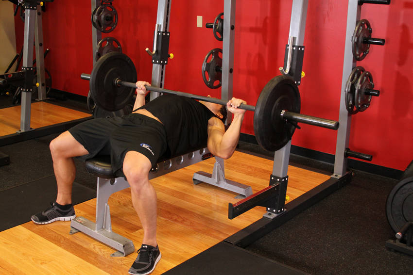
In your plan: Tue heavy (top set + backoffs), Thu volume. Tested week 12.
Muscles: chest (also shoulders, triceps)
Cues
Shoulder blades pinched and down, slight arch, feet planted.
Touch low chest / sternum; forearms vertical at the bottom.
Optional: pause the top set on the chest like a competition rep.
Step-by-step
Lie back on a flat bench. Using a medium width grip (a grip that creates a 90-degree angle in the middle of the movement between the forearms and the upper arms), lift the bar from the rack and hold it straight over you with your arms locked. This will be your starting position.
From the starting position, breathe in and begin coming down slowly until the bar touches your middle chest.
After a brief pause, push the bar back to the starting position as you breathe out. Focus on pushing the bar using your chest muscles. Lock your arms and squeeze your chest in the contracted position at the top of the motion, hold for a second and then start coming down slowly again. Tip: Ideally, lowering the weight should take about twice as long as raising it.
Repeat the movement for the prescribed amount of repetitions.
When you are done, place the bar back in the rack.
Conventional deadlift
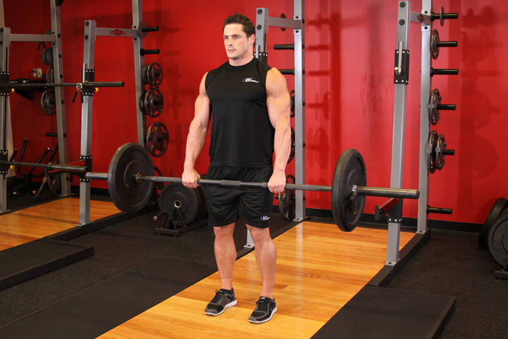
In your plan: Wed heavy (top set + backoffs). Tested week 12.
Bar over mid-foot; shins touch the bar before you pull.
Pull the slack out of the bar, lats tight, then push the floor away.
Reset each rep (no bouncing). Never grind to failure in training.
Long arms favor you: your deadlift should end up above your squat.
Step-by-step
Stand in front of a loaded barbell.
While keeping the back as straight as possible, bend your knees, bend forward and grasp the bar using a medium (shoulder width) overhand grip. This will be the starting position of the exercise. Tip: If it is difficult to hold on to the bar with this grip, alternate your grip or use wrist straps.
While holding the bar, start the lift by pushing with your legs while simultaneously getting your torso to the upright position as you breathe out. In the upright position, stick your chest out and contract the back by bringing the shoulder blades back. Think of how the soldiers in the military look when they are in standing in attention.
Go back to the starting position by bending at the knees while simultaneously leaning the torso forward at the waist while keeping the back straight. When the weights on the bar touch the floor you are back at the starting position and ready to perform another repetition.
Perform the amount of repetitions prescribed in the program.
Standing overhead press
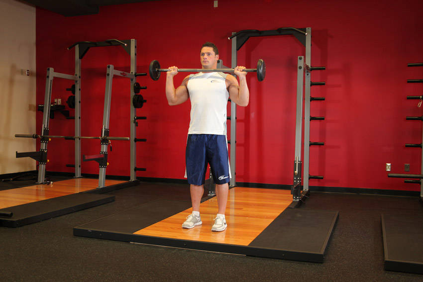
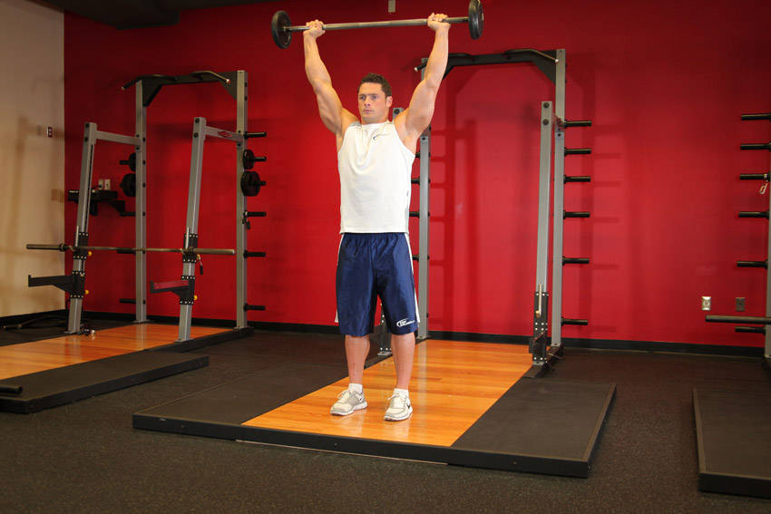
In your plan: Thu main lift. Rep-max tested week 12.
Muscles: shoulders (also triceps)
Cues
Squeeze glutes and brace so the lower back doesn't arch.
Move the head back, press, then push the head 'through' at lockout.
Bar finishes over mid-foot, biceps by the ears.
Step-by-step
Start by placing a barbell that is about chest high on a squat rack. Once you have selected the weights, grab the barbell using a pronated (palms facing forward) grip. Make sure to grip the bar wider than shoulder width apart from each other.
Slightly bend the knees and place the barbell on your collar bone. Lift the barbell up keeping it lying on your chest. Take a step back and position your feet shoulder width apart from each other.
Once you pick up the barbell with the correct grip length, lift the bar up over your head by locking your arms. Hold at about shoulder level and slightly in front of your head. This is your starting position.
Lower the bar down to the collarbone slowly as you inhale.
Lift the bar back up to the starting position as you exhale.
Repeat for the recommended amount of repetitions.
Romanian deadlift
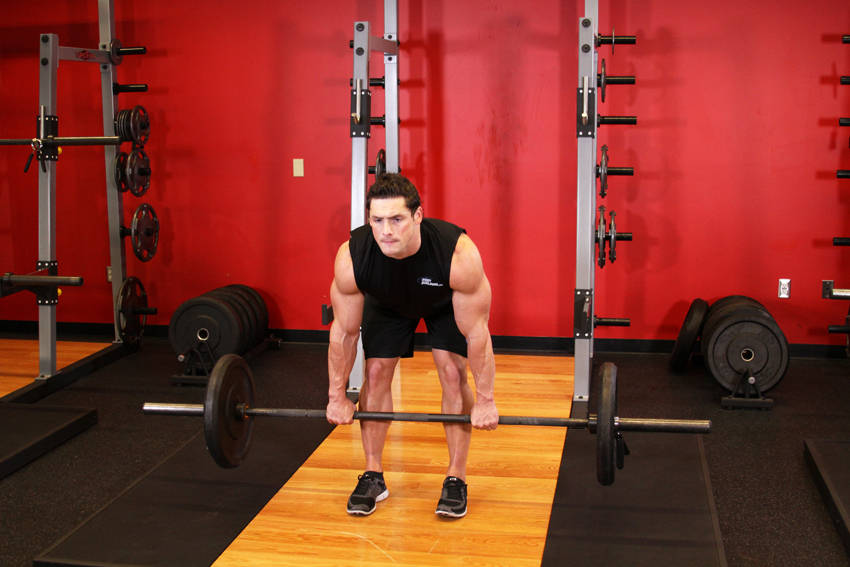
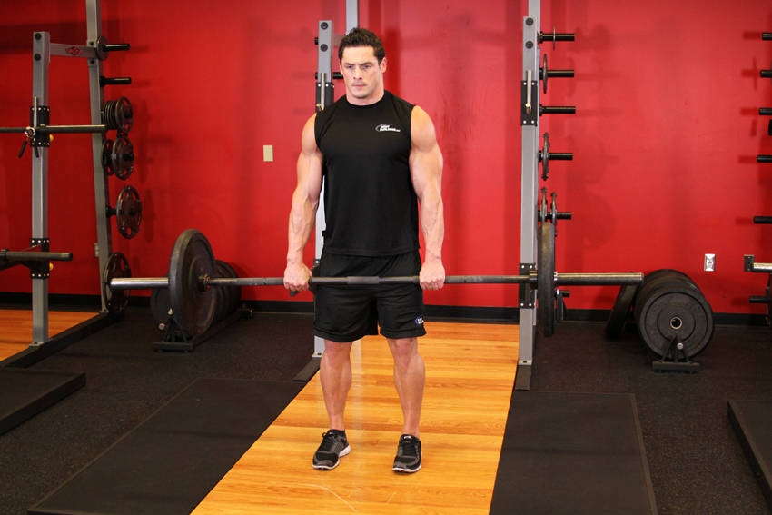
In your plan: Sat main lift (your only accessory hinge).
Soft knees, push hips back; bar slides down the thighs.
Stop when hamstrings are fully stretched (usually mid-shin); back stays flat.
Leave 2–3 reps in the tank.
Step-by-step
Put a barbell in front of you on the ground and grab it using a pronated (palms facing down) grip that a little wider than shoulder width. Tip: Depending on the weight used, you may need wrist wraps to perform the exercise and also a raised platform in order to allow for better range of motion.
Bend the knees slightly and keep the shins vertical, hips back and back straight. This will be your starting position.
Keeping your back and arms completely straight at all times, use your hips to lift the bar as you exhale. Tip: The movement should not be fast but steady and under control.
Once you are standing completely straight up, lower the bar by pushing the hips back, only slightly bending the knees, unlike when squatting. Tip: Take a deep breath at the start of the movement and keep your chest up. Hold your breath as you lower and exhale as you complete the movement.
Deep range: knees toward chest without the lower back peeling off the pad.
Don't lock the knees hard at the top.
Step-by-step
Using a leg press machine, sit down on the machine and place your legs on the platform directly in front of you at a medium (shoulder width) foot stance. (Note: For the purposes of this discussion we will use the medium stance described above which targets overall development; however you can choose any of the three stances described in the foot positioning section).
Lower the safety bars holding the weighted platform in place and press the platform all the way up until your legs are fully extended in front of you. Tip: Make sure that you do not lock your knees. Your torso and the legs should make a perfect 90-degree angle. This will be your starting position.
As you inhale, slowly lower the platform until your upper and lower legs make a 90-degree angle.
Pushing mainly with the heels of your feet and using the quadriceps go back to the starting position as you exhale.
Repeat for the recommended amount of repetitions and ensure to lock the safety pins properly once you are done. You do not want that platform falling on you fully loaded.
Place the back of your torso against the back pad of the machine and hook your shoulders under the shoulder pads provided.
Position your legs in the platform using a shoulder width medium stance with the toes slightly pointed out. Tip: Keep your head up at all times and also maintain the back on the pad at all times.
Place your arms on the side handles of the machine and disengage the safety bars (which on most designs is done by moving the side handles from a facing front position to a diagonal position).
Now straighten your legs without locking the knees. This will be your starting position. (Note: For the purposes of this discussion we will use the medium stance described above which targets overall development; however you can choose any of the three stances described in the foot positioning section).
Begin to slowly lower the unit by bending the knees as you maintain a straight posture with the head up (back on the pad at all times). Continue down until the angle between the upper leg and the calves becomes slightly less than 90-degrees (which is the point in which the upper legs are below parallel to the floor). Inhale as you perform this portion of the movement. Tip: If you performed the exercise correctly, the front of the knees should make an imaginary straight line with the toes that is perpendicular to the front. If your knees are past that imaginary line (if they are past your toes) then you are placing undue stress on the knee and the exercise has been performed incorrectly.
Begin to raise the unit as you exhale by pushing the floor with mainly with the heel of your foot as you straighten the legs again and go back to the starting position.
Repeat for the recommended amount of repetitions.
Seated leg curl
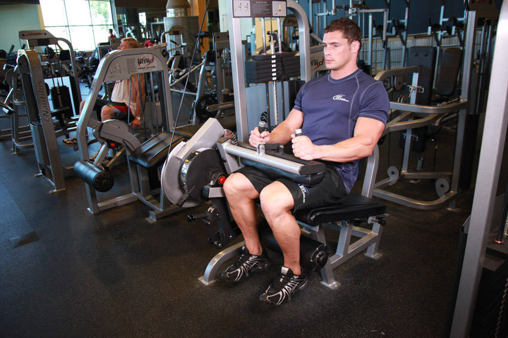
In your plan: Mon & Fri hamstrings. Preferred over lying (more growth in Maeo 2021).
Muscles: hamstrings
Cues
Lean the torso forward slightly to stretch the hamstrings more.
Control the return; take the last set to failure.
Step-by-step
Adjust the machine lever to fit your height and sit on the machine with your back against the back support pad.
Place the back of lower leg on top of padded lever (just a few inches under the calves) and secure the lap pad against your thighs, just above the knees. Then grasp the side handles on the machine as you point your toes straight (or you can also use any of the other two stances) and ensure that the legs are fully straight right in front of you. This will be your starting position.
As you exhale, pull the machine lever as far as possible to the back of your thighs by flexing at the knees. Keep your torso stationary at all times. Hold the contracted position for a second.
Slowly return to the starting position as you breathe in.
Repeat for the recommended amount of repetitions.
Lying leg curl
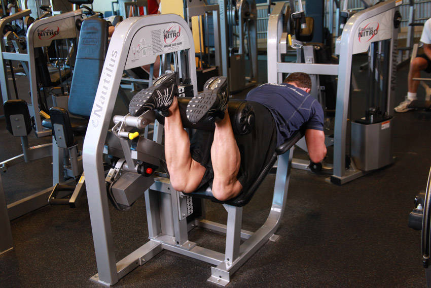
In your plan: Hamstring curl swap.
Muscles: hamstrings
Cues
Hips pressed into the pad.
Full stretch at the bottom of every rep.
Step-by-step
Adjust the machine lever to fit your height and lie face down on the leg curl machine with the pad of the lever on the back of your legs (just a few inches under the calves). Tip: Preferably use a leg curl machine that is angled as opposed to flat since an angled position is more favorable for hamstrings recruitment.
Keeping the torso flat on the bench, ensure your legs are fully stretched and grab the side handles of the machine. Position your toes straight (or you can also use any of the other two stances described on the foot positioning section). This will be your starting position.
As you exhale, curl your legs up as far as possible without lifting the upper legs from the pad. Once you hit the fully contracted position, hold it for a second.
As you inhale, bring the legs back to the initial position. Repeat for the recommended amount of repetitions.
Bulgarian split squat
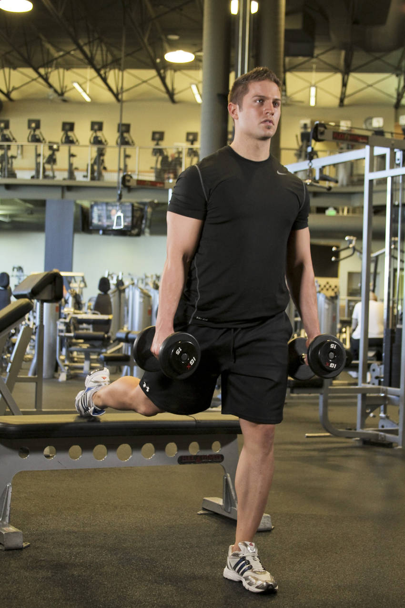
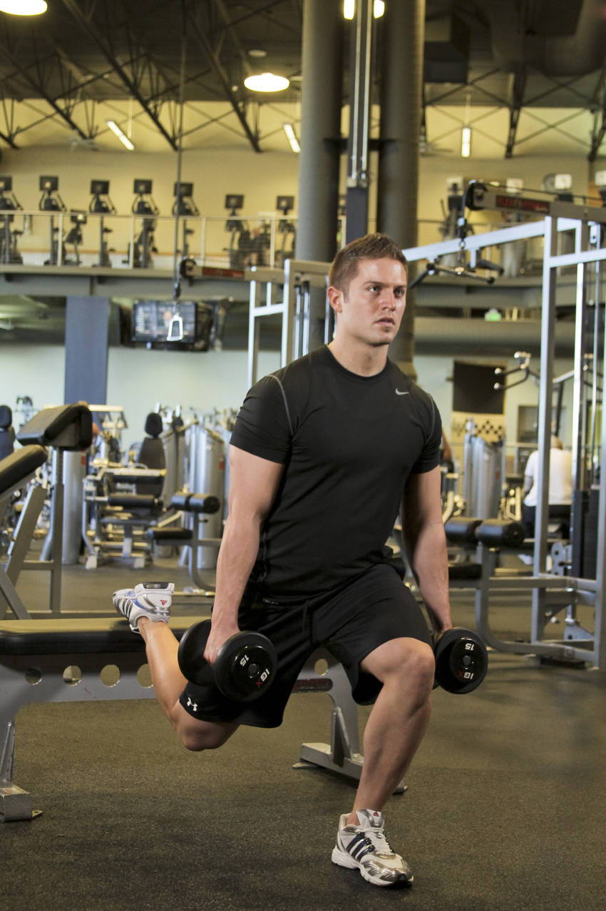
In your plan: Mon unilateral leg work (Block 1).
Muscles: quadriceps (also glutes, hamstrings)
Cues
Rear foot on a bench; front foot far enough out that the front heel stays down.
Sink straight down until the back knee nearly touches the floor.
Do the weaker leg first; match reps on the other leg.
Step-by-step
Position yourself into a staggered stance with the rear foot elevated and front foot forward.
Hold a dumbbell in each hand, letting them hang at the sides. This will be your starting position.
Begin by descending, flexing your knee and hip to lower your body down. Maintain good posture througout the movement. Keep the front knee in line with the foot as you perform the exercise.
At the bottom of the movement, drive through the heel to extend the knee and hip to return to the starting position.
Walking lunge
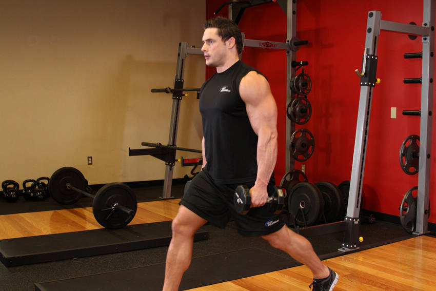
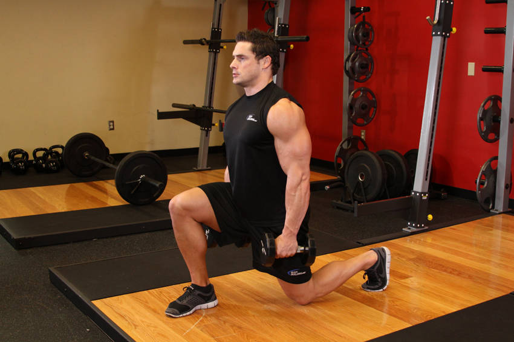
In your plan: Replaces Bulgarian split squat in Block 2.
Stand with your torso upright holding two dumbbells in your hands by your sides. This will be your starting position.
Step forward with your right leg around 2 feet or so from the foot being left stationary behind and lower your upper body down, while keeping the torso upright and maintaining balance. Inhale as you go down. Note: As in the other exercises, do not allow your knee to go forward beyond your toes as you come down, as this will put undue stress on the knee joint. Make sure that you keep your front shin perpendicular to the ground.
Using mainly the heel of your foot, push up and go back to the starting position as you exhale.
Repeat the movement for the recommended amount of repetitions and then perform with the left leg.
Leg extension
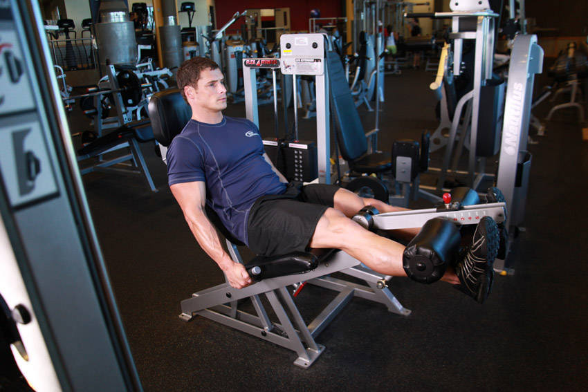
In your plan: Fri quads.
Muscles: quadriceps
Cues
Pause 1 s at the top; control the lowering.
Last set to failure is fine.
Step-by-step
For this exercise you will need to use a leg extension machine. First choose your weight and sit on the machine with your legs under the pad (feet pointed forward) and the hands holding the side bars. This will be your starting position. Tip: You will need to adjust the pad so that it falls on top of your lower leg (just above your feet). Also, make sure that your legs form a 90-degree angle between the lower and upper leg. If the angle is less than 90-degrees then that means the knee is over the toes which in turn creates undue stress at the knee joint. If the machine is designed that way, either look for another machine or just make sure that when you start executing the exercise you stop going down once you hit the 90-degree angle.
Using your quadriceps, extend your legs to the maximum as you exhale. Ensure that the rest of the body remains stationary on the seat. Pause a second on the contracted position.
Slowly lower the weight back to the original position as you inhale, ensuring that you do not go past the 90-degree angle limit.
Repeat for the recommended amount of times.
Barbell hip thrust
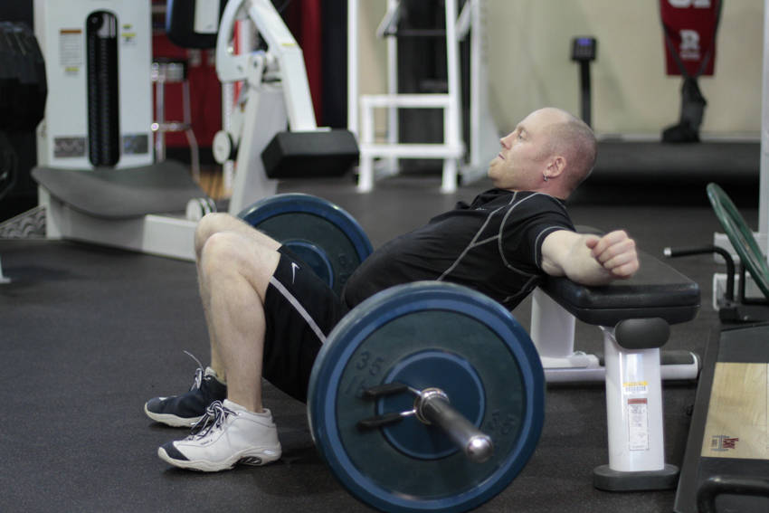
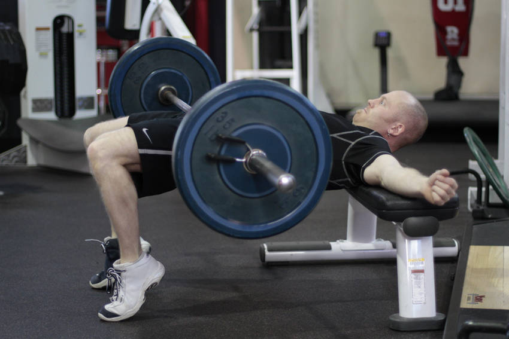
In your plan: Fri glutes.
Muscles: glutes (also calves, hamstrings)
Cues
Upper back on bench edge, chin tucked.
Full hip lockout with ribs down; don't arch the lower back.
Step-by-step
Begin seated on the ground with a bench directly behind you. Have a loaded barbell over your legs. Using a fat bar or having a pad on the bar can greatly reduce the discomfort caused by this exercise.
Roll the bar so that it is directly above your hips, and lean back against the bench so that your shoulder blades are near the top of it.
Begin the movement by driving through your feet, extending your hips vertically through the bar. Your weight should be supported by your shoulder blades and your feet. Extend as far as possible, then reverse the motion to return to the starting position.
Standing calf raise
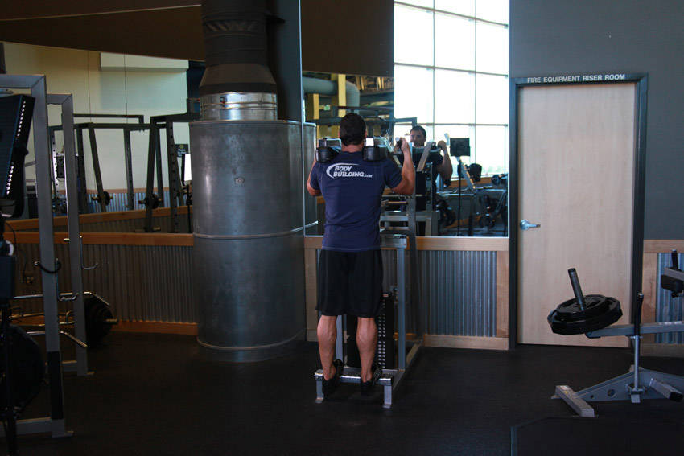
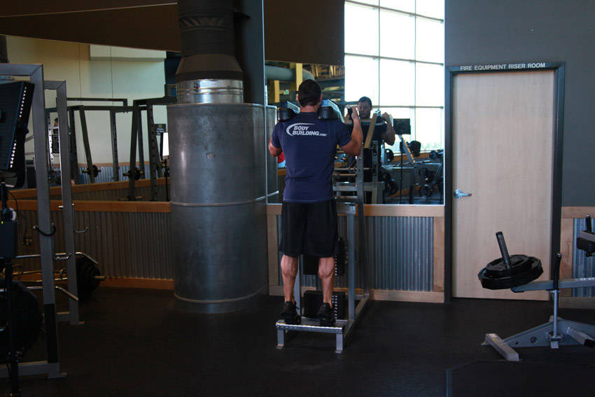
In your plan: Mon calves.
Muscles: calves
Cues
2 s pause in the deepest stretch at the bottom (biggest driver of growth).
Full rise onto the big toe at the top.
Step-by-step
Adjust the padded lever of the calf raise machine to fit your height.
Place your shoulders under the pads provided and position your toes facing forward (or using any of the two other positions described at the beginning of the chapter). The balls of your feet should be secured on top of the calf block with the heels extending off it. Push the lever up by extending your hips and knees until your torso is standing erect. The knees should be kept with a slight bend; never locked. Toes should be facing forward, outwards or inwards as described at the beginning of the chapter. This will be your starting position.
Raise your heels as you breathe out by extending your ankles as high as possible and flexing your calf. Ensure that the knee is kept stationary at all times. There should be no bending at any time. Hold the contracted position by a second before you start to go back down.
Go back slowly to the starting position as you breathe in by lowering your heels as you bend the ankles until calves are stretched.
Repeat for the recommended amount of repetitions.
Seated calf raise
In your plan: Fri calves.
Muscles: calves
Cues
Same deep-stretch pause as standing calves.
Slow, no bouncing.
Step-by-step
Sit on the machine and place your toes on the lower portion of the platform provided with the heels extending off. Choose the toe positioning of your choice (forward, in, or out) as per the beginning of this chapter.
Place your lower thighs under the lever pad, which will need to be adjusted according to the height of your thighs. Now place your hands on top of the lever pad in order to prevent it from slipping forward.
Lift the lever slightly by pushing your heels up and release the safety bar. This will be your starting position.
Slowly lower your heels by bending at the ankles until the calves are fully stretched. Inhale as you perform this movement.
Raise the heels by extending the ankles as high as possible as you contract the calves and breathe out. Hold the top contraction for a second.
Repeat for the recommended amount of repetitions.
Push
Incline DB press (30°)
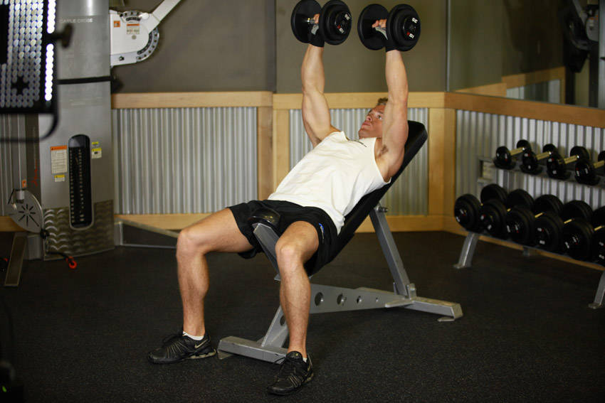
In your plan: Tue upper chest.
Muscles: chest (also shoulders, triceps)
Cues
Bench at about 30°.
Deep stretch at the bottom, elbows ~45° from the torso.
Step-by-step
Lie back on an incline bench with a dumbbell in each hand atop your thighs. The palms of your hands will be facing each other.
Then, using your thighs to help push the dumbbells up, lift the dumbbells one at a time so that you can hold them at shoulder width.
Once you have the dumbbells raised to shoulder width, rotate your wrists forward so that the palms of your hands are facing away from you. This will be your starting position.
Be sure to keep full control of the dumbbells at all times. Then breathe out and push the dumbbells up with your chest.
Lock your arms at the top, hold for a second, and then start slowly lowering the weight. Tip Ideally, lowering the weights should take about twice as long as raising them.
Repeat the movement for the prescribed amount of repetitions.
When you are done, place the dumbbells back on your thighs and then on the floor. This is the safest manner to release the dumbbells.
Weighted dip
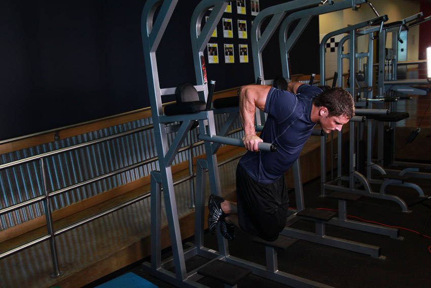
In your plan: Tue chest/triceps (Block 1).
Muscles: chest (also shoulders, triceps)
Cues
Slight forward lean; lower until shoulders are just below elbows.
Stop short of depth that hurts your shoulders.
Step-by-step
For this exercise you will need access to parallel bars. To get yourself into the starting position, hold your body at arms length (arms locked) above the bars.
While breathing in, lower yourself slowly with your torso leaning forward around 30 degrees or so and your elbows flared out slightly until you feel a slight stretch in the chest.
Once you feel the stretch, use your chest to bring your body back to the starting position as you breathe out. Tip: Remember to squeeze the chest at the top of the movement for a second.
Repeat the movement for the prescribed amount of repetitions.
Close-grip bench
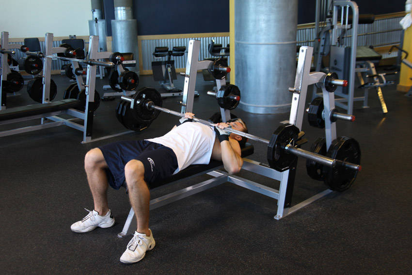
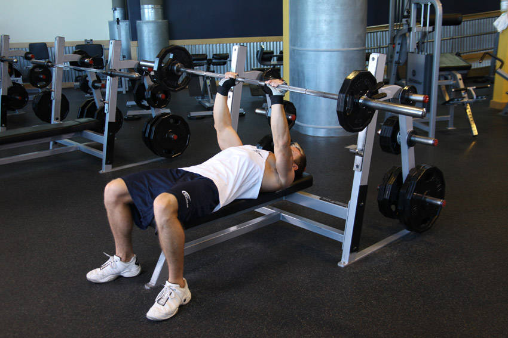
In your plan: Replaces dips in Block 2.
Muscles: triceps (also chest, shoulders)
Cues
Hands about shoulder width (not narrower).
Elbows tucked; touch lower chest.
Step-by-step
Lie back on a flat bench. Using a close grip (around shoulder width), lift the bar from the rack and hold it straight over you with your arms locked. This will be your starting position.
As you breathe in, come down slowly until you feel the bar on your middle chest. Tip: Make sure that - as opposed to a regular bench press - you keep the elbows close to the torso at all times in order to maximize triceps involvement.
After a second pause, bring the bar back to the starting position as you breathe out and push the bar using your triceps muscles. Lock your arms in the contracted position, hold for a second and then start coming down slowly again. Tip: It should take at least twice as long to go down than to come up.
Repeat the movement for the prescribed amount of repetitions.
When you are done, place the bar back in the rack.
Cable crossover
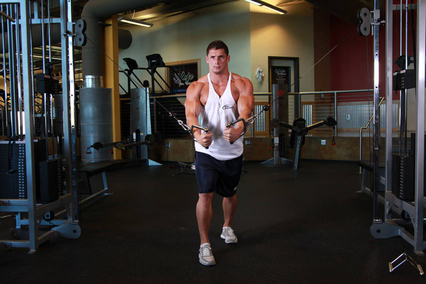
In your plan: Tue chest isolation (swaps with machine fly in Block 2).
Muscles: chest (also shoulders)
Cues
Step forward and let the arms open wide for a full chest stretch.
Hug a big tree; squeeze the hands together.
Step-by-step
To get yourself into the starting position, place the pulleys on a high position (above your head), select the resistance to be used and hold the pulleys in each hand.
Step forward in front of an imaginary straight line between both pulleys while pulling your arms together in front of you. Your torso should have a small forward bend from the waist. This will be your starting position.
With a slight bend on your elbows in order to prevent stress at the biceps tendon, extend your arms to the side (straight out at both sides) in a wide arc until you feel a stretch on your chest. Breathe in as you perform this portion of the movement. Tip: Keep in mind that throughout the movement, the arms and torso should remain stationary; the movement should only occur at the shoulder joint.
Return your arms back to the starting position as you breathe out. Make sure to use the same arc of motion used to lower the weights.
Hold for a second at the starting position and repeat the movement for the prescribed amount of repetitions.
Machine fly / pec deck
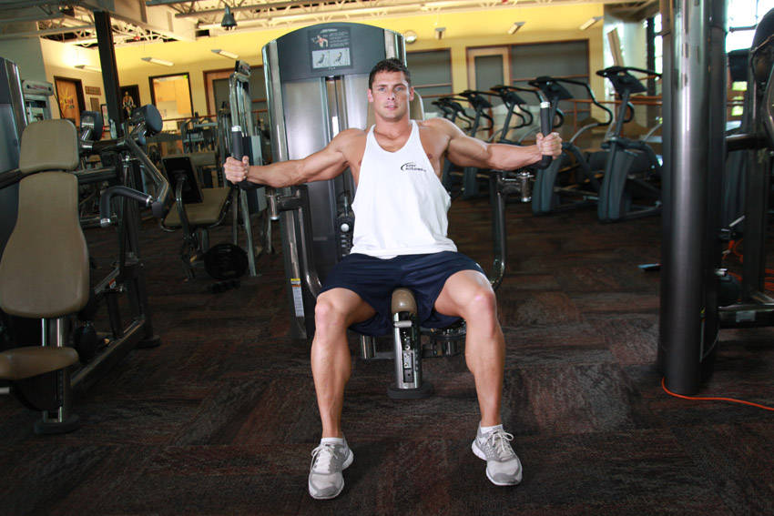
In your plan: Thu chest isolation (swaps with crossover in Block 2).
Muscles: chest
Cues
Set the seat so the handles start behind your chest line (stretch).
Slight bend in the elbows, constant tension.
Step-by-step
Sit on the machine with your back flat on the pad.
Take hold of the handles. Tip: Your upper arms should be positioned parallel to the floor; adjust the machine accordingly. This will be your starting position.
Push the handles together slowly as you squeeze your chest in the middle. Breathe out during this part of the motion and hold the contraction for a second.
Return back to the starting position slowly as you inhale until your chest muscles are fully stretched.
Repeat for the recommended amount of repetitions.
DB fly
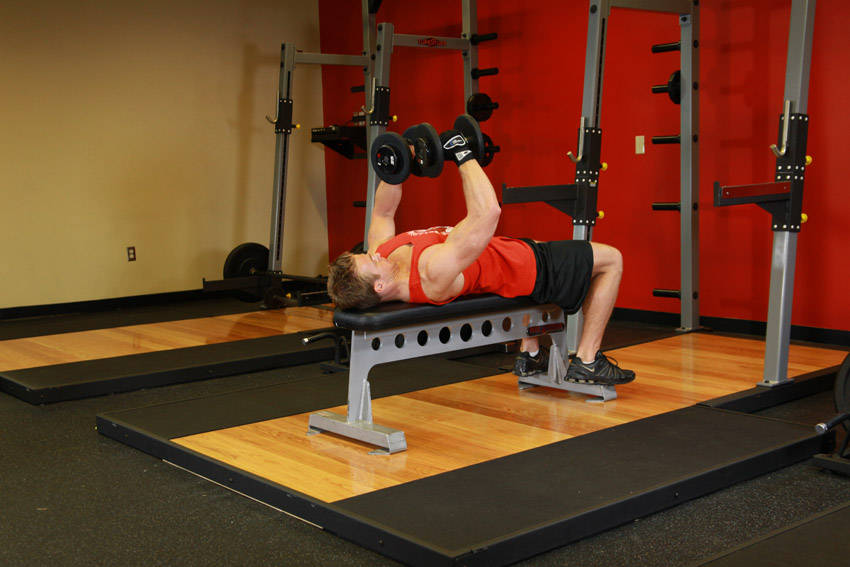
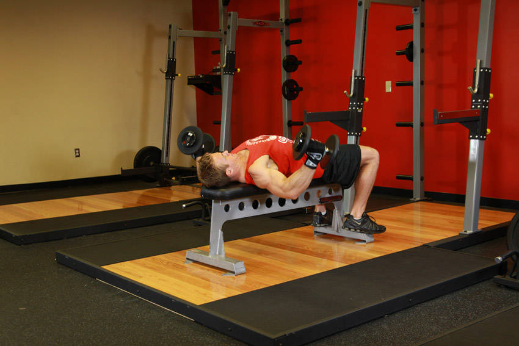
In your plan: Chest isolation swap.
Muscles: chest
Cues
Lower until a strong chest stretch; don't go so deep the shoulders ache.
Step-by-step
Lie down on a flat bench with a dumbbell on each hand resting on top of your thighs. The palms of your hand will be facing each other.
Then using your thighs to help raise the dumbbells, lift the dumbbells one at a time so you can hold them in front of you at shoulder width with the palms of your hands facing each other. Raise the dumbbells up like you're pressing them, but stop and hold just before you lock out. This will be your starting position.
With a slight bend on your elbows in order to prevent stress at the biceps tendon, lower your arms out at both sides in a wide arc until you feel a stretch on your chest. Breathe in as you perform this portion of the movement. Tip: Keep in mind that throughout the movement, the arms should remain stationary; the movement should only occur at the shoulder joint.
Return your arms back to the starting position as you squeeze your chest muscles and breathe out. Tip: Make sure to use the same arc of motion used to lower the weights.
Hold for a second at the contracted position and repeat the movement for the prescribed amount of repetitions.
DB lateral raise
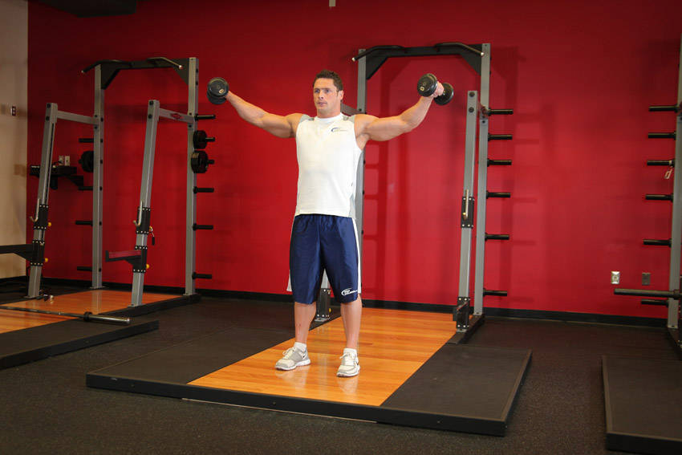
In your plan: Side delts.
Muscles: shoulders
Cues
Lead with the elbows; raise to shoulder height.
Light weight, no swinging; last set to failure.
Step-by-step
Pick a couple of dumbbells and stand with a straight torso and the dumbbells by your side at arms length with the palms of the hand facing you. This will be your starting position.
While maintaining the torso in a stationary position (no swinging), lift the dumbbells to your side with a slight bend on the elbow and the hands slightly tilted forward as if pouring water in a glass. Continue to go up until you arms are parallel to the floor. Exhale as you execute this movement and pause for a second at the top.
Lower the dumbbells back down slowly to the starting position as you inhale.
Repeat for the recommended amount of repetitions.
Cable lateral raise
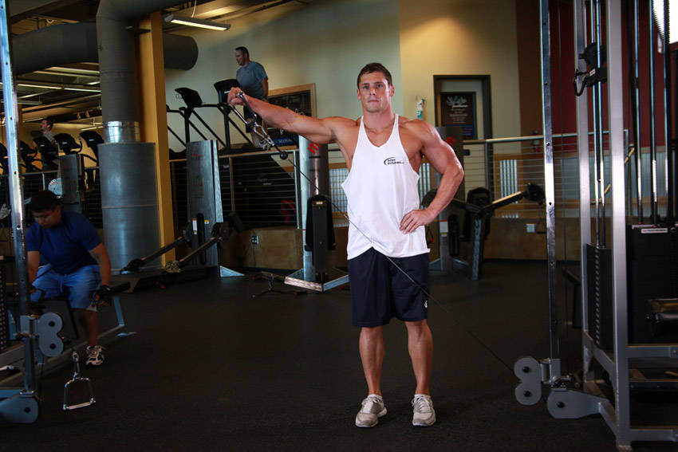
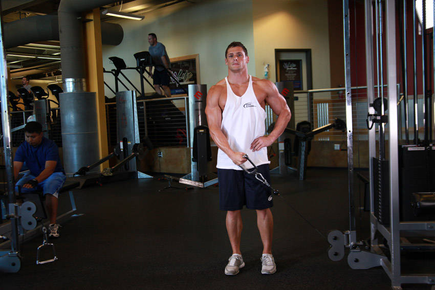
In your plan: Side delts.
Muscles: shoulders (also forearms)
Cues
Cable from behind or beside you keeps tension at the bottom.
Controlled 2 s lowering.
Step-by-step
Start by standing to the right side of a low pulley row. Use your left hand to come across the body and grab a single handle attached to the low pulley with a pronated grip (palms facing down). Rest your arm in front of you. Your right hand should grab the machine for better support and balance.
Make sure that your back is erect and your feet are shoulder width apart from each other. This is the starting position.
Begin to use the left hand and come across your body out until it is elevated to shoulder height while exhaling.
Feel the contraction at the top for a second and begin to slowly lower the handle back down to the original starting position while inhaling.
Repeat for the recommended amount of repetitions.
Switch arms and repeat the exercise.
Overhead cable triceps extension
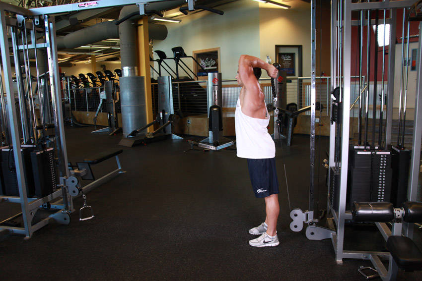
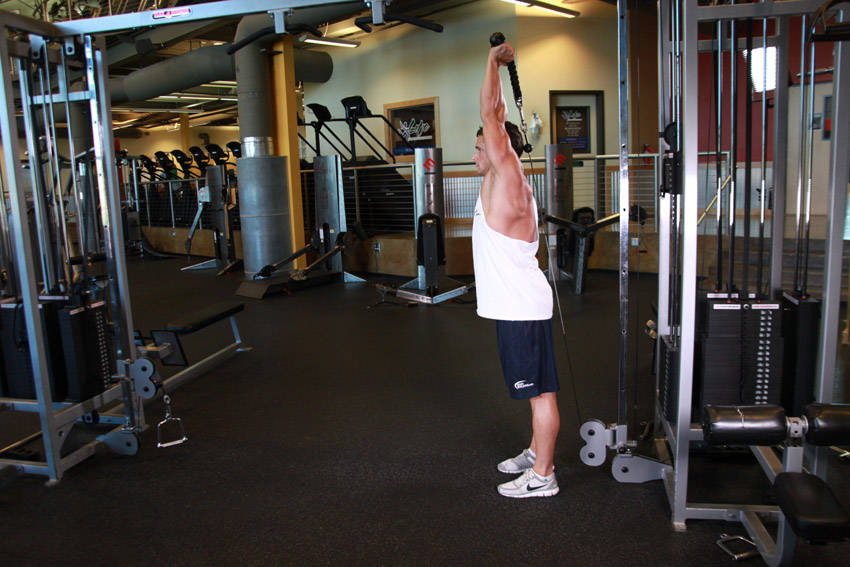
In your plan: Tue triceps. Overhead = long-head stretch (more growth in Maeo 2023).
Muscles: triceps
Cues
Face away from the stack, elbows up by the head.
Let the rope go deep behind the head before extending.
Step-by-step
Attach a rope to the bottom pulley of the pulley machine.
Grasping the rope with both hands, extend your arms with your hands directly above your head using a neutral grip (palms facing each other). Your elbows should be in close to your head and the arms should be perpendicular to the floor with the knuckles aimed at the ceiling. This will be your starting position.
Slowly lower the rope behind your head as you hold the upper arms stationary. Inhale as you perform this movement and pause when your triceps are fully stretched.
Return to the starting position by flexing your triceps as you breathe out.
Repeat for the recommended amount of repetitions.
Overhead DB triceps extension
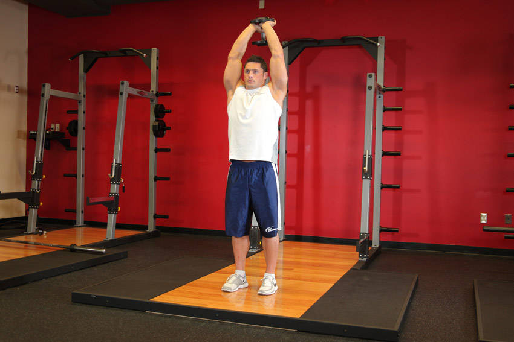
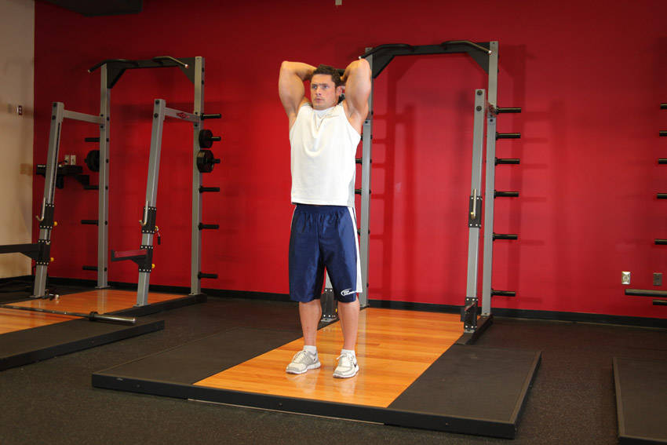
In your plan: Replaces rope pushdown in Block 2.
Muscles: triceps
Cues
Both hands under one dumbbell plate.
Elbows point up, deep stretch behind the head.
Step-by-step
To begin, stand up with a dumbbell held by both hands. Your feet should be about shoulder width apart from each other. Slowly use both hands to grab the dumbbell and lift it over your head until both arms are fully extended.
The resistance should be resting in the palms of your hands with your thumbs around it. The palm of the hands should be facing up towards the ceiling. This will be your starting position.
Keeping your upper arms close to your head with elbows in and perpendicular to the floor, lower the resistance in a semicircular motion behind your head until your forearms touch your biceps. Tip: The upper arms should remain stationary and only the forearms should move. Breathe in as you perform this step.
Go back to the starting position by using the triceps to raise the dumbbell. Breathe out as you perform this step.
Repeat for the recommended amount of repetitions.
Rope triceps pushdown
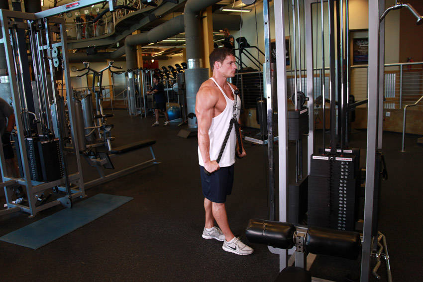
In your plan: Thu triceps (Block 1).
Muscles: triceps
Cues
Elbows pinned to the sides.
Spread the rope at the bottom; full lockout.
Step-by-step
Attach a rope attachment to a high pulley and grab with a neutral grip (palms facing each other).
Standing upright with the torso straight and a very small inclination forward, bring the upper arms close to your body and perpendicular to the floor. The forearms should be pointing up towards the pulley as they hold the rope with the palms facing each other. This is your starting position.
Using the triceps, bring the rope down as you bring each side of the rope to the side of your thighs. At the end of the movement the arms are fully extended and perpendicular to the floor. The upper arms should always remain stationary next to your torso and only the forearms should move. Exhale as you perform this movement.
After holding for a second, at the contracted position, bring the rope slowly up to the starting point. Breathe in as you perform this step.
Repeat for the recommended amount of repetitions.
Pull
Weighted pull-up or chin-up
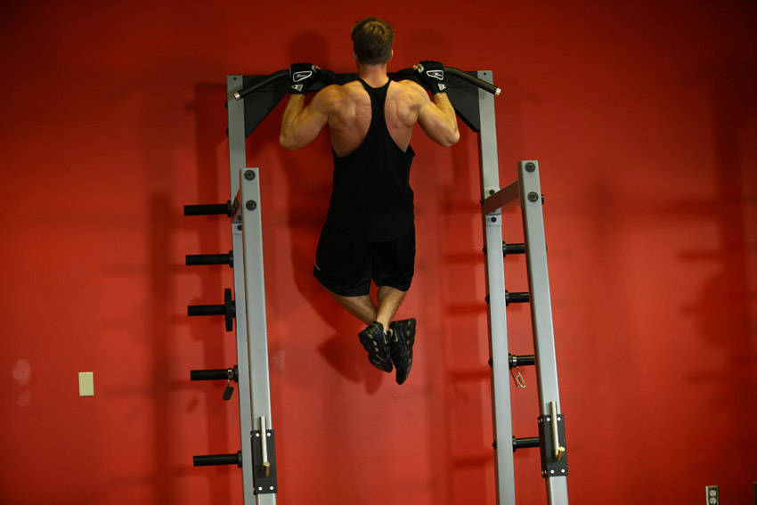
In your plan: Wed vertical pull; Sat in Block 2.
Muscles: lats (also biceps, middle back)
Cues
Dead hang at the bottom every rep.
Chest toward the bar; add weight with a belt once 10+ clean reps.
Step-by-step
Grab the pull-up bar with the palms facing forward using the prescribed grip. Note on grips: For a wide grip, your hands need to be spaced out at a distance wider than your shoulder width. For a medium grip, your hands need to be spaced out at a distance equal to your shoulder width and for a close grip at a distance smaller than your shoulder width.
As you have both arms extended in front of you holding the bar at the chosen grip width, bring your torso back around 30 degrees or so while creating a curvature on your lower back and sticking your chest out. This is your starting position.
Pull your torso up until the bar touches your upper chest by drawing the shoulders and the upper arms down and back. Exhale as you perform this portion of the movement. Tip: Concentrate on squeezing the back muscles once you reach the full contracted position. The upper torso should remain stationary as it moves through space and only the arms should move. The forearms should do no other work other than hold the bar.
After a second on the contracted position, start to inhale and slowly lower your torso back to the starting position when your arms are fully extended and the lats are fully stretched.
Repeat this motion for the prescribed amount of repetitions.
Grab the pull-up bar with the palms facing your torso and a grip closer than the shoulder width.
As you have both arms extended in front of you holding the bar at the chosen grip width, keep your torso as straight as possible while creating a curvature on your lower back and sticking your chest out. This is your starting position. Tip: Keeping the torso as straight as possible maximizes biceps stimulation while minimizing back involvement.
As you breathe out, pull your torso up until your head is around the level of the pull-up bar. Concentrate on using the biceps muscles in order to perform the movement. Keep the elbows close to your body. Tip: The upper torso should remain stationary as it moves through space and only the arms should move. The forearms should do no other work other than hold the bar.
After a second of squeezing the biceps in the contracted position, slowly lower your torso back to the starting position; when your arms are fully extended. Breathe in as you perform this portion of the movement.
Repeat this motion for the prescribed amount of repetitions.
Pull elbows down to the ribs; don't lean way back.
Step-by-step
Sit down on a pull-down machine with a wide bar attached to the top pulley. Make sure that you adjust the knee pad of the machine to fit your height. These pads will prevent your body from being raised by the resistance attached to the bar.
Grab the bar with the palms facing forward using the prescribed grip. Note on grips: For a wide grip, your hands need to be spaced out at a distance wider than shoulder width. For a medium grip, your hands need to be spaced out at a distance equal to your shoulder width and for a close grip at a distance smaller than your shoulder width.
As you have both arms extended in front of you holding the bar at the chosen grip width, bring your torso back around 30 degrees or so while creating a curvature on your lower back and sticking your chest out. This is your starting position.
As you breathe out, bring the bar down until it touches your upper chest by drawing the shoulders and the upper arms down and back. Tip: Concentrate on squeezing the back muscles once you reach the full contracted position. The upper torso should remain stationary and only the arms should move. The forearms should do no other work except for holding the bar; therefore do not try to pull down the bar using the forearms.
After a second at the contracted position squeezing your shoulder blades together, slowly raise the bar back to the starting position when your arms are fully extended and the lats are fully stretched. Inhale during this portion of the movement.
Repeat this motion for the prescribed amount of repetitions.
Chest-supported row
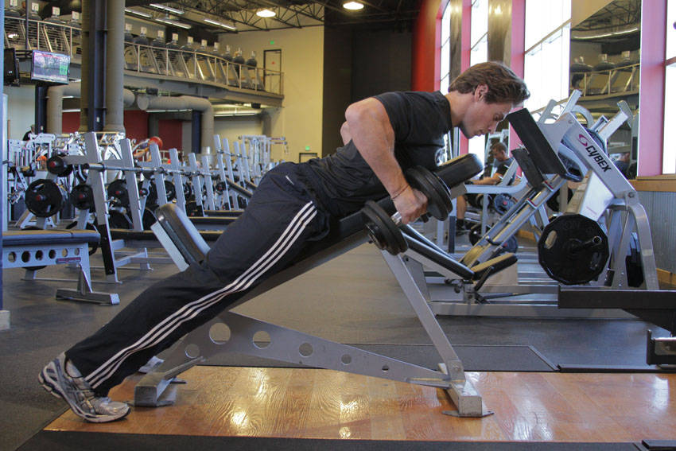
In your plan: Wed back (Block 1).
Muscles: middle back (also biceps, forearms, lats, shoulders)
Cues
Chest stays on the pad; no hip drive.
Reach long at the bottom, squeeze shoulder blades at the top.
Step-by-step
Using a neutral grip, lean into an incline bench.
Take a dumbbell in each hand with a neutral grip, beginning with the arms straight. This will be your starting position.
Retract the shoulder blades and flex the elbows to row the dumbbells to your side.
Pause at the top of the motion, and then return to the starting position.
Seal row / machine row
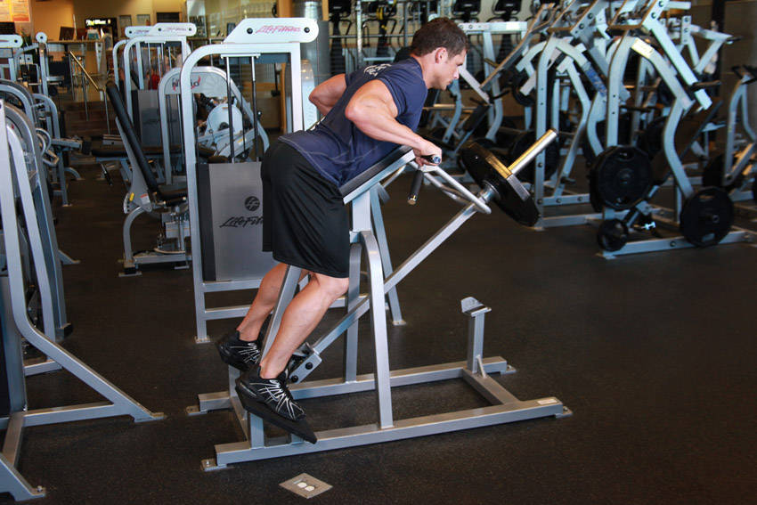
In your plan: Replaces chest-supported row in Block 2.
Muscles: middle back (also biceps, lats)
Cues
Same as chest-supported row: no body English.
Full stretch each rep.
Step-by-step
Load up the T-bar Row Machine with the desired weight and adjust the leg height so that your upper chest is at the top of the pad. Tip: In some machines all you can do is stand on the appropriate step that allows you to be at a height that has the upper chest at the top of the pad.
Lay face down on the pad and grab the handles. You can either use a palms down, palms up, or palms in position depending on what part of your back you want to emphasize.
Lift the bar off the rack and extend your arms in front of you. This will be your starting position.
As you exhale slowly pull the weight up and squeeze your back at the top of the movement. Tip: Keep the upper arms as close to the torso as possible throughout the movement in order to better engage the back muscles. Also, do not lift your body off of the pad at any time and refrain from using the biceps to lift the weight.
After a second contraction at the top of the movement, as you inhale, slowly go back down to the starting position.
Repeat for the recommended amount of repetitions.
Barbell row
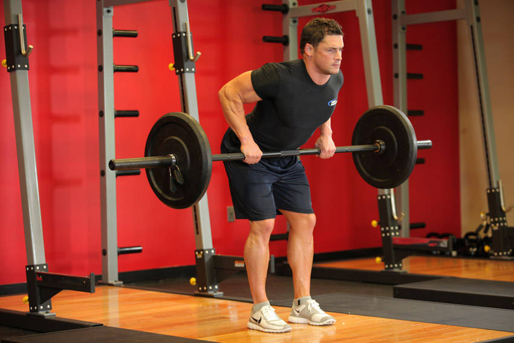
In your plan: Sat back thickness.
Muscles: middle back (also biceps, lats, shoulders)
Cues
Torso ~45°, back flat.
Pull to the lower ribs; control the descent. Some momentum on the last reps is OK.
Step-by-step
Holding a barbell with a pronated grip (palms facing down), bend your knees slightly and bring your torso forward, by bending at the waist, while keeping the back straight until it is almost parallel to the floor. Tip: Make sure that you keep the head up. The barbell should hang directly in front of you as your arms hang perpendicular to the floor and your torso. This is your starting position.
Now, while keeping the torso stationary, breathe out and lift the barbell to you. Keep the elbows close to the body and only use the forearms to hold the weight. At the top contracted position, squeeze the back muscles and hold for a brief pause.
Then inhale and slowly lower the barbell back to the starting position.
Repeat for the recommended amount of repetitions.
One-arm DB row
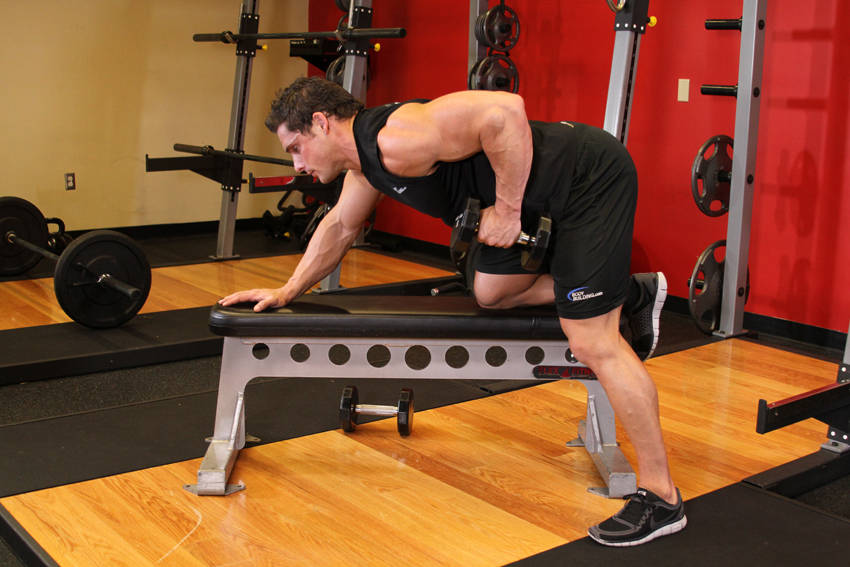
In your plan: Horizontal pull.
Muscles: middle back (also biceps, lats, shoulders)
Cues
Let the DB stretch the lat at the bottom.
Pull the elbow toward the hip.
Step-by-step
Choose a flat bench and place a dumbbell on each side of it.
Place the right leg on top of the end of the bench, bend your torso forward from the waist until your upper body is parallel to the floor, and place your right hand on the other end of the bench for support.
Use the left hand to pick up the dumbbell on the floor and hold the weight while keeping your lower back straight. The palm of the hand should be facing your torso. This will be your starting position.
Pull the resistance straight up to the side of your chest, keeping your upper arm close to your side and keeping the torso stationary. Breathe out as you perform this step. Tip: Concentrate on squeezing the back muscles once you reach the full contracted position. Also, make sure that the force is performed with the back muscles and not the arms. Finally, the upper torso should remain stationary and only the arms should move. The forearms should do no other work except for holding the dumbbell; therefore do not try to pull the dumbbell up using the forearms.
Lower the resistance straight down to the starting position. Breathe in as you perform this step.
Repeat the movement for the specified amount of repetitions.
Switch sides and repeat again with the other arm.
DB or barbell shrug
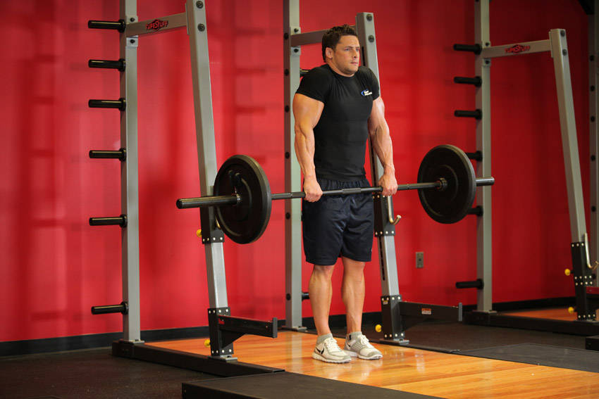
In your plan: Wed traps.
Muscles: traps
Cues
Straight up toward the ears, 1 s squeeze.
No rolling the shoulders.
Step-by-step
Stand up straight with your feet at shoulder width as you hold a barbell with both hands in front of you using a pronated grip (palms facing the thighs). Tip: Your hands should be a little wider than shoulder width apart. You can use wrist wraps for this exercise for a better grip. This will be your starting position.
Raise your shoulders up as far as you can go as you breathe out and hold the contraction for a second. Tip: Refrain from trying to lift the barbell by using your biceps.
Slowly return to the starting position as you breathe in.
Repeat for the recommended amount of repetitions.
Face pull / rear-delt cable fly
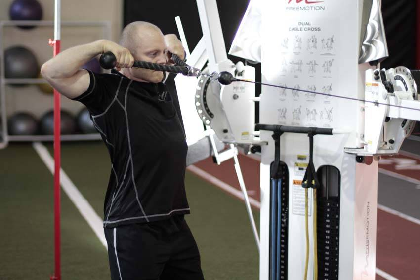
In your plan: Rear delts.
Muscles: shoulders (also middle back)
Cues
Rope to the eyebrows, elbows high and wide.
Pause and squeeze the rear delts.
Step-by-step
Facing a high pulley with a rope or dual handles attached, pull the weight directly towards your face, separating your hands as you do so. Keep your upper arms parallel to the ground.
Reverse pec deck / reverse fly
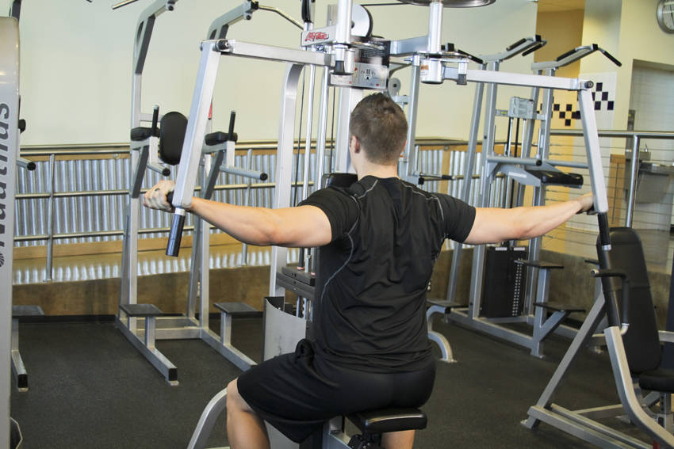
In your plan: Rear delts.
Muscles: shoulders
Cues
Arms nearly straight; sweep wide.
Don't let the traps take over.
Step-by-step
Adjust the handles so that they are fully to the rear. Make an appropriate weight selection and adjust the seat height so the handles are at shoulder level. Grasp the handles with your hands facing inwards. This will be your starting position.
In a semicircular motion, pull your hands out to your side and back, contracting your rear delts.
Keep your arms slightly bent throughout the movement, with all of the motion occurring at the shoulder joint.
Pause at the rear of the movement, and slowly return the weight to the starting position.
Incline DB curl
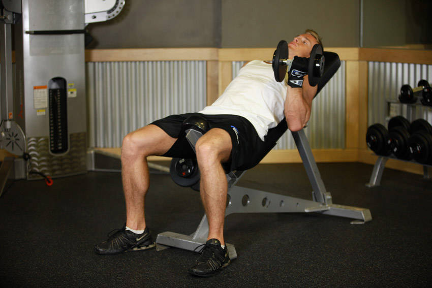
In your plan: Wed biceps. Incline = biceps trained in a stretched position.
Muscles: biceps
Cues
Bench at ~45–60°; arms hang straight down behind the torso.
Don't let the elbows drift forward.
Step-by-step
Sit back on an incline bench with a dumbbell in each hand held at arms length. Keep your elbows close to your torso and rotate the palms of your hands until they are facing forward. This will be your starting position.
While holding the upper arm stationary, curl the weights forward while contracting the biceps as you breathe out. Only the forearms should move. Continue the movement until your biceps are fully contracted and the dumbbells are at shoulder level. Hold the contracted position for a second.
Slowly begin to bring the dumbbells back to starting position as your breathe in.
Repeat for the recommended amount of repetitions.
Barbell curl
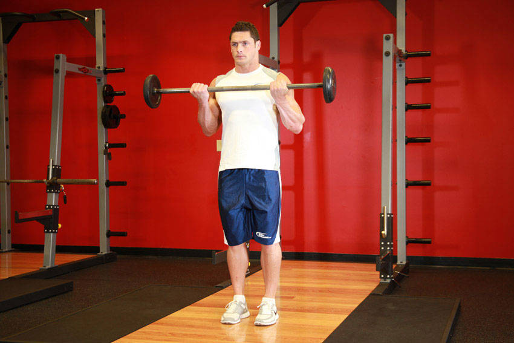
In your plan: Sat biceps (Block 1).
Muscles: biceps (also forearms)
Cues
Elbows stay by the sides.
Full extension at the bottom every rep.
Step-by-step
Stand up with your torso upright while holding a barbell at a shoulder-width grip. The palm of your hands should be facing forward and the elbows should be close to the torso. This will be your starting position.
While holding the upper arms stationary, curl the weights forward while contracting the biceps as you breathe out. Tip: Only the forearms should move.
Continue the movement until your biceps are fully contracted and the bar is at shoulder level. Hold the contracted position for a second and squeeze the biceps hard.
Slowly begin to bring the bar back to starting position as your breathe in.
Repeat for the recommended amount of repetitions.
EZ-bar curl
In your plan: Replaces barbell curl in Block 2.
Muscles: biceps
Cues
Easier on the wrists than a straight bar.
Same strict form as barbell curl.
Step-by-step
Stand up straight while holding an EZ curl bar at the wide outer handle. The palms of your hands should be facing forward and slightly tilted inward due to the shape of the bar. Keep your elbows close to your torso. This will be your starting position.
Now, while keeping your upper arms stationary, exhale and curl the weights forward while contracting the biceps. Focus on only moving your forearms.
Continue to raise the weight until your biceps are fully contracted and the bar is at shoulder level. Hold the top contracted position for a moment and squeeze the biceps.
Then inhale and slowly lower the bar back to the starting position.
Repeat for the recommended amount of repetitions.
Preacher curl
In your plan: Biceps swap.
Muscles: biceps
Cues
Armpits snug to the pad.
Control the bottom: it's the stretched position.
Step-by-step
To perform this movement you will need a preacher bench and an E-Z bar. Grab the E-Z curl bar at the close inner handle (either have someone hand you the bar which is preferable or grab the bar from the front bar rest provided by most preacher benches). The palm of your hands should be facing forward and they should be slightly tilted inwards due to the shape of the bar.
With the upper arms positioned against the preacher bench pad and the chest against it, hold the E-Z Curl Bar at shoulder length. This will be your starting position.
As you breathe in, slowly lower the bar until your upper arm is extended and the biceps is fully stretched.
As you exhale, use the biceps to curl the weight up until your biceps is fully contracted and the bar is at shoulder height. Squeeze the biceps hard and hold this position for a second.
Repeat for the recommended amount of repetitions.
Core
Hanging leg raise
In your plan: Abs.
Muscles: abdominals
Cues
Curl the pelvis up; don't just swing the legs.
Bent knees is fine to start.
Step-by-step
Hang from a chin-up bar with both arms extended at arms length in top of you using either a wide grip or a medium grip. The legs should be straight down with the pelvis rolled slightly backwards. This will be your starting position.
Raise your legs until the torso makes a 90-degree angle with the legs. Exhale as you perform this movement and hold the contraction for a second or so.
Go back slowly to the starting position as you breathe in.
Repeat for the recommended amount of repetitions.
Cable crunch or ab wheel
In your plan: Abs.
Muscles: abdominals
Cues
Hips stay still; curl the ribcage toward the pelvis.
Pause at the bottom.
Step-by-step
Kneel below a high pulley that contains a rope attachment.
Grasp cable rope attachment and lower the rope until your hands are placed next to your face.
Flex your hips slightly and allow the weight to hyperextend the lower back. This will be your starting position.
With the hips stationary, flex the waist as you contract the abs so that the elbows travel towards the middle of the thighs. Exhale as you perform this portion of the movement and hold the contraction for a second.
Slowly return to the starting position as you inhale. Tip: Make sure that you keep constant tension on the abs throughout the movement. Also, do not choose a weight so heavy that the lower back handles the brunt of the work.
Repeat for the recommended amount of repetitions.
Ab wheel
In your plan: Abs swap.
Muscles: abdominals (also shoulders)
Cues
Ribs down, no lower-back sag.
Roll only as far as you can keep a flat back.
Step-by-step
Hold the Ab Roller with both hands and kneel on the floor.
Now place the ab roller on the floor in front of you so that you are on all your hands and knees (as in a kneeling push up position). This will be your starting position.
Slowly roll the ab roller straight forward, stretching your body into a straight position. Tip: Go down as far as you can without touching the floor with your body. Breathe in during this portion of the movement.
After a pause at the stretched position, start pulling yourself back to the starting position as you breathe out. Tip: Go slowly and keep your abs tight at all times.
Swaps
Good morning
In your plan: Hinge swap for RDL (only one hinge accessory per week).
Hips back until hamstrings stretch; back flat. Go light.
Step-by-step
Begin with a bar on a rack at shoulder height. Rack the bar across the rear of your shoulders as you would a power squat, not on top of your shoulders. Keep your back tight, shoulder blades pinched together, and your knees slightly bent. Step back from the rack.
Begin by bending at the hips, moving them back as you bend over to near parallel. Keep your back arched and your cervical spine in proper alignment.
Reverse the motion by extending through the hips with your glutes and hamstrings. Continue until you have returned to the starting position.
Hex-bar (trap-bar) deadlift
In your plan: Hinge swap.
Muscles: quadriceps (also glutes, hamstrings)
Cues
Stand centered in the bar.
More knee bend than a conventional deadlift.
Step-by-step
For this exercise load a trap bar, also known as a hex bar, to an appropriate weight resting on the ground. Stand in the center of the apparatus and grasp both handles.
Lower your hips, look forward with your head and keep your chest up.
Begin the movement by driving through the heels and extend your hips and knees. Avoid rounding your back at all times.
At the completion of the movement, lower the weight back to the ground under control.
Reverse hyper
In your plan: Block-long hinge swap only.
Muscles: hamstrings (also calves, glutes)
Cues
Swing the legs up with the glutes, not momentum.
Light and controlled.
Step-by-step
Place your feet between the pads after loading an appropriate weight. Lay on the top pad, allowing your hips to hang off the back, while grasping the handles to hold your position.
To begin the movement, flex the hips, pulling the legs forward.
Reverse the motion by extending the hips, kicking the leg back. It is very important not to over-extend the hip on this movement, stopping short of your full range of motion.
Return by again flexing the hip, pulling the carriage forward as far as you can.
Repeat for the desired number of repetitions.
Sumo deadlift
In your plan: Optional test in the next cycle (long frame), not mid-block.
Begin with a bar loaded on the ground. Approach the bar so that the bar intersects the middle of the feet. The feet should be set very wide, near the collars. Bend at the hips to grip the bar. The arms should be directly below the shoulders, inside the legs, and you can use a pronated grip, a mixed grip, or hook grip. Relax the shoulders, which in effect lengthens your arms.
Take a breath, and then lower your hips, looking forward with your head with your chest up. Drive through the floor, spreading your feet apart, with your weight on the back half of your feet. Extend through the hips and knees.
As the bar passes through the knees, lean back and drive the hips into the bar, pulling your shoulder blades together.
Return the weight to the ground by bending at the hips and controlling the weight on the way down.
Front squat
In your plan: Possible Legs B volume lift in a future cycle.
This exercise is best performed inside a squat rack for safety purposes. To begin, first set the bar on a rack that best matches your height. Once the correct height is chosen and the bar is loaded, bring your arms up under the bar while keeping the elbows high and the upper arm slightly above parallel to the floor. Rest the bar on top of the deltoids and cross your arms while grasping the bar for total control.
Lift the bar off the rack by first pushing with your legs and at the same time straightening your torso.
Step away from the rack and position your legs using a shoulder width medium stance with the toes slightly pointed out. Keep your head up at all times as looking down will get you off balance and also maintain a straight back. This will be your starting position. (Note: For the purposes of this discussion we will use the medium stance described above which targets overall development; however you can choose any of the three stances described in the foot positioning section).
Begin to slowly lower the bar by bending the knees as you maintain a straight posture with the head up. Continue down until the angle between the upper leg and the calves becomes slightly less than 90-degrees (which is the point in which the upper legs are below parallel to the floor). Inhale as you perform this portion of the movement. Tip: If you performed the exercise correctly, the front of the knees should make an imaginary straight line with the toes that is perpendicular to the front. If your knees are past that imaginary line (if they are past your toes) then you are placing undue stress on the knee and the exercise has been performed incorrectly.
Begin to raise the bar as you exhale by pushing the floor mainly with the middle of your foot as you straighten the legs again and go back to the starting position.